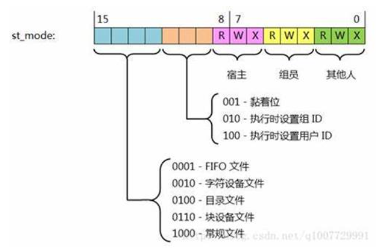
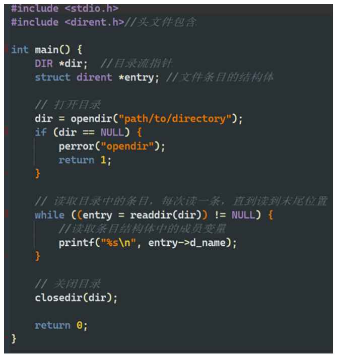

8-5 linux 系统 IO 函数：
open 函数：
函数原型： int open(const char *pathname, int flags, mode_t mode);
功能：打开一个文件并返回文件描述符。与 c 库中的 fopen 差不多
参数：
pathname：要打开的文件路径名。
flags：打开文件的标志
O_RDONLY（只读）
O_WRONLY（只写）
O_RDWR（读写）
O_CREAT（创建文件）
O_APPEND（追加写）
mode（可选）：新文件的访问权限，只有在创建新文件时才会使用。一般使用八进制表示.
0400：只读权限，允许文件所有者读取。
0200：只写权限，允许文件所有者写入。
0100：执行权限，允许文件所有者执行（对于可执行文件）。
0040：允许组成员读取。
0020：允许组成员写入。
0010：允许组成员执行（对于可执行文件）。
0004：允许其他用户读取。
0002：允许其他用户写入。
0001：允许其他用户执行（对于可执行文件）。
这些权限可以通过使用按位或运算符（|）来进行组合。
返回值：成功时返回文件描述符，失败时返回 - 1。
close 函数：
函数原型： int close(int fd);
功能：关闭一个已打开的文件。
参数：fd 为要关闭的文件描述符。
返回值：成功时返回 0，失败时返回 - 1。
如果一个进程打开了某个文件，如果这个进程终止了，那么系统会自己调用 clos 函数关闭这些个已经 打开的文件。
read 函数：
函数原型： ssize_t read(int fd, void *buf, size_t count);
功能：从文件中读取数据。
参数：
fd：要读取的文件描述符。
buf：用于存储读取数据的缓冲区指针。
count：要读取的字节数。
返回值：返回实际读取的字节数，若返回 0 表示已达到文件末尾，失败时返回 - 1。
write 函数：
函数原型： ssize_t write(int fd, const void *buf, size_t count);
功能：向文件中写入数据。
参数：
fd：要写入的文件描述符。
buf：要写入的数据缓冲区指针。
count：要写入的字节数。
返回值：返回实际写入的字节数，失败时返回 - 1。
lseek 函数：
头文件：
#include<sys/types.h>
#include<unistd.h>
函数原型： off_t lseek(int fd , off_t offset , int whence);
功能：在文件读写操作中设置文件指针的偏移量。
参数：
fd： 文件描述符
offset： 文件偏移量
whence：位置
SEEK_SET: 如果 offset 为 0 则代表是文件的开始位置
SEEK_CUR: 如果 offset 为 0 则代表当前位置
SEEK_END: 如果 offset 为 0 则代表文件的结尾位置
返回值：调用成功则返回从当前位置到开始的长度，调用失败则返回 - 1，
一. lseak 函数的一些用法：
移动文件读写位置：如果我们使用 write 函数往文件中写入了内容，然后调用 read 函数进行读文件， 会发现没有读到刚才写入的内容。那是因为当我们输入完毕以后，读写位置此时是在刚才输入的内容之后的， 因此什么也读不到，所以我们可以使用 lseek 函数将读写位置往回移一下。请在合适的位置调用以下函数。
lseek (fd , 0 , SEEK_SET); // 将读写位置移动到文件首部。
** 二。计算文件大小：** 因为 lseek 函数的返回值是 offset 到 whence 的大小。请在合适的位置调用以下函数。
lseek (fd , 0 , SEEK_END); // 返回值为从 0 到文件末尾之间有多少字节
** 三。拓展文件大小：**lseek 的偏移量大小是以 offset 到 whence 之间决定的（函数会相对于文件首部来计算， 也是就是说 offset 可以看作首部），如果我们将 whence 设置为文件末尾，offset 我们设置为大于 0 的数，那么 在计算偏移量的时候就会向文件尾再偏移 offset 个字节，然后我们再写入 offset 个字节的数据，这样我们就可 以用来扩展文件的大小了。可以尝试在合适的位置调用以下函数：
lseek (fd , 10 , SEEK_END); // 先扩展
write (fd , “a” , 1); // 再写入
perror 函数和 errno：
头文件：#include<errno.h>
函数原型： void perror(const char* str);
功能：当系统调用出错时，系统会对 errno 自动赋值，perror 可以将 errno 对应的错误信息打印出来。
参数：
可以传入全局变量 “errno” 来打印相应的错误信息。
errno**** 变量：他在头文件 <errno.h> 中，当系统调用某个函数失败后会对该变量进行设置，相应的错误代码 会存储在该变量中。
8-6 文件 IO 的阻塞和非阻塞：
阻塞文件 IO：当一个进程，线程或者其他什么东西对文件进行某些操作时，如果还有一个进程，线程或其 他什么东西也想对同一个文件进行操作。那么会将后面想要操作的进程，线程或者其他东西等阻塞，直到没有 东西对文件进行操作时，才可以去操作文件。
非阻塞文件 IO：当一个进程，线程或者其他什么东西对文件进行某些操作时，如果还有一个进程，线程或 其他什么东西也想对同一个文件进行操作，那么后来的会直接返回，不会阻塞。
注意：如果多个进程，线程或者其他东西同时访问一个文件时，会触发竞争条件。linux 多个线程，进程或 者其他东西访问同一个文件时，如果这个文件是普通文件则是非阻塞的，如果是终端设备或者管道和套接字那 就是阻塞的。
stat 函数：
头文件：
#include <sys/types.h>
#include <sys/stat.h>
#include <unistd.h>
函数原型： int stat(const char *path , struct stat *buf);
功能：通过文件路径来获取文件的相关信息，并且存储在结构体 struct stat 中。如果文件是个链接文件的话， 那么会获取链接文件所指向的文件的信息。
参数：
path： 要获取文件信息的文件路径。
buf： 用于存储文件信息的结构体指针。
返回值：
成功时返回 0，失败则返回 - 1。
lstat 函数：
头文件：
#include <sys/types.h>
#include <sys/stat.h>
#include <unistd.h>
函数原型： int lstat(const char *path , struct stat *buf);
功能：通过文件路径来获取文件的相关信息，并且存储在结构体 struct stat 中。如果文件是个链接文件的话， 那么会获取链接文件的信息，而不是获取链接文件指向的文件的信息。
参数：
path： 要获取文件信息的文件路径。
buf： 用于存储文件信息的结构体指针。
返回值：
成功时返回 0，失败则返回 - 1。
stat/lstat 获取的 stat 结构体信息：
struct stat {
dev_t st_dev; // 文件的设备编号
ino_t st_ino; // 文件的 i-node 编号
mode_t st_mode; // 文件的类型和访问权限
nlink_t st_nlink; // 连接到该文件的硬链接数量
uid_t st_uid; // 文件所有者的用户 ID
gid_t st_gid; // 文件所有者的组 ID
dev_t st_rdev; // 如果文件是设备文件，则为其设备编号
off_t st_size; // 文件大小（以字节为单位）
blksize_t st_blksize; // 文件系统 I/O 缓冲区的优化大小
blkcnt_t st_blocks; // 分配给文件的块数
struct timespec st_atim; // 最后访问时间
struct timespec st_mtim; // 最后修改时间
struct timespec st_ctim; // 最后状态更改时间
};
stat 结构体中成员变量 **：mode_t st_mode; 代表的是文件的类型和访问权限，它一共有 16 位：
0-2bit – 其他人权限：
S_IROTH 00004 读权限
S_IWOTH 00002 写权限
S_IXOTH 00001 执行权限
S_IRWXO 00007 掩码，过滤 st_mode 中除其他人权限以外的信息
3-5bit – 所属组权限：
S_IRGRP 00040 读权限
S_IWGRP 00020 写权限
S_IXGRP 00010 执行权限
S_IRWXG 00070 掩码，过滤 st_mode 中除所属组权限以外的信息
6-8bit – 文件所有者权限：
S_IRUSR 00400 读权限
S_IWUSR 00200 写权限
S_IXUSR 00100 执行权限
S_IRWXU 00700 掩码，过滤 st_mode 中除文件所有者权限以外的信息
12-15bit – 文件类型：
S_IFSOCK 0140000 套接字
S_IFLNK 0120000 符号链接（软链接）
S_IFREG 0100000 普通文件
S_IFBLK 0060000 块设备
S_IFDIR 0040000 目录
S_IFCHR 0020000 字符设备
S_IFIFO 0010000 管道
S_IFMT 0170000 掩码，过滤 st_mode 中除文件类型以外的信息

目录打开函数 opendir：
头文件：#include<dirent.h>
函数原型： DIR *opendir(const char *dirname);
函数功能：打开一个目录，并且返回一个 DIR 结构体指针。
函数参数：dirname 是要打开的目录的路径名。
函数返回值：调用成功后返回一个指向 DIR 结构体的指针，如果调用失败则返回 NULL。
条目读取函数 readdir：
头文件：#include<dirent.h>
函数原型： struct dirent *readdir(DIR *dirp);
函数功能：读取目录中的文件或者子目录，一次调用只读取一个。
函数参数：dirp 是函数 opendir 返回的目录流指针。
函数返回值：调用成功后返回一个指向 struct dirent 结构体的指针，如果调用失败或者读取到目录末尾则 返回 NULL。
struct dirent**** 结构体的内容：
struct dirent{
ino_t d_ino; // 文件的 inode 号。
off_t d_of;：// 文件在目录流中的偏移。
unsigned short d_reclen; // 该条目的长度。
unsigned char d_type; // 文件类型。
char d_name []; // 文件名。
}
其中成员变量 d_type 是一个用于表示文件的类型，以下为它的取值：
DT_UNKNOWN：未知类型。
DT_REG：普通文件。
DT_DIR：目录。
DT_FIFO：命名管道（FIFO）。
DT_SOCK：套接字。
DT_CHR：字符设备。
DT_BLK：块设备。
DT_LNK：符号链接
目录关闭函数 closedir:
头文件：#include<dirent.h>
函数原型： int closedir(DIR *dirp);
函数功能：关闭先前 opendir 打开的目录。
函数参数：dirp 是原先 opendir 打开的目录流指针。
函数返回值：调用成功后返回 0，调用失败返回 - 1.
以上三个目录函数的例子：

dup 函数：
头文件：#include<unsitd.h>
函数原型： int dup(int oldfd);
函数功能：赋值一个已有的文件描述符，并且返回一个新的文件描述符，这个新的文件描述符与原来的文 件描述符指向同一个资源或者文件。
函数参数：oldfd 为要赋值的旧的文件描述符。
返回值：成功则返回新的文件描述符，这个新的描述符与旧的所指向的文件或者资源是一样的。失败则返 回 - 1.
dup2 函数：
头文件：#include<unsitd.h>
函数原型： int dup2(int oldfd , int newfd);
函数功能：将一个已有的文件描述符赋值到指定的文件描述符中，如果指定的文件描述符已经打开了一个 文件，则会先关闭它，然后再将旧的文件描述符复制到这个位置。
函数参数：
oldfd 为要赋值的旧的文件描述符。
newfd 为要指定的新文件描述符
返回值：成功则返回新的文件描述符，失败则返回 - 1。
注意：dup2 函数可以用于重定向标准输入，输出和错误流（描述符表的 0 1 2 号元素）。
fcntl 函数：
头文件：#include<fcnt1.h>
函数原型： int fcnt1(int fd , int cmd , …);
函数功能：对文件描述符进行各种控制操作。
函数参数：
fd 是要操作的文件描述符
cmd 是要执行的命令：
F_DUPFD：复制文件描述符。
F_GETFD：获取文件描述符标志。
F_SETFD：设置文件描述符标志。
F_GETFL：获取文件状态标志。
F_SETFL：设置文件状态标志。
… 这个是与命令相关的附加参数，更具命令的不同来进行传递。
返回值：返回值取决于命令，如果调用失败则返回 - 1.